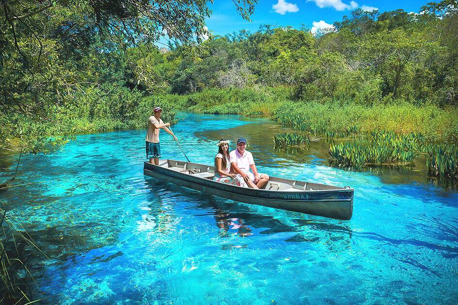

Mato Grosso é um estado localizado na região Centro-Oeste do Brasil. É conhecido por sua grande extensão territorial, sendo o terceiro maior estado do país. O estado possui uma economia voltada principalmente para a agropecuária, com destaque na produção de soja, milho, algodão e carnes. Além disso, Mato Grosso abriga parte do Pantanal, uma das maiores áreas alagadas do mundo, que é um importante bioma natural. O estado também é rico em biodiversidade e possui várias atrações turísticas, como o Parque Nacional de Chapada dos Guimarães.
